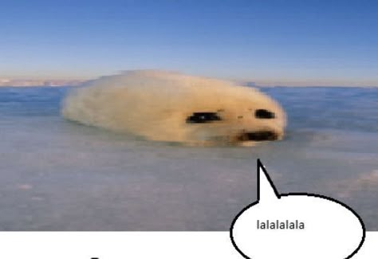
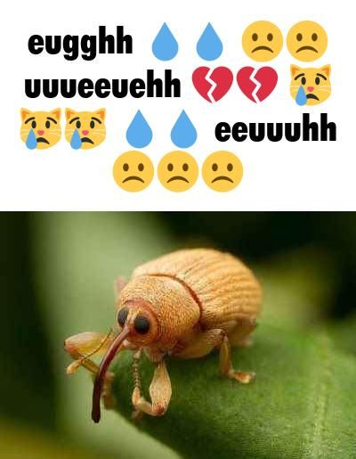

gh...gh.. Gang... *I say breathlessly like an old man*
In English class, we learned about travel articles/reviews so that's what we're making 🙂
(I'm slowly running out of ideas on how to be funny for this assignment)

Step 1
So the first thing we had to do was brainstorm as to what we wanted to review.
Unlike BINDO class, we had more freedom to talk about anything regarding our Edutrip.
My options were the food, the people (hospitality, politeness, overall character, etc), and the sights.
I then narrowed it down to XiMenDing Night Market, the characters and hospitality of the Taiwanese students, and idk Taipei 101 (I was running out of ideas at the time).
We had to share with a partner (mine was Clarence) but we didn't even really discuss that much and I chose XiMenDing Night Market on my own.
Step 2-3
Step 2 was to outline our travel talk using bullet points and the given outline template in the booklet we were given.
We had to write all of it down ON PAPER in the span of around a day or so (which for a lot of us was basically impossible...).
The next step (3) was to make a draft out of the outline we had just made. the draft had to be a minimum of 300 words and a maximum of 500 words. (I might've went over that but I didn't count)
This was also done by hand. This assignment had us all stressing out like crazy, we were sacrificing our lunch breaks for this. Or at least I was.
Step 4-5-6
Step 4 was to self-check and peer-check it. We (for both self and peer) had to add annotation notes to the paper and fill in a checklist.
Special for the self-check, we had to fill in 2 questions: What went well and what didn't.
At this point, I was at home struggling to finish the draft because of how long I made it. I knew very well I would miss the deadline.
And I did! Not only did I miss it, I just couldn't submit it anymore because the submissions closed after the deadline.
My peer for the peer-checking was Michael but his internet wasn't working so I had to FILL THE PEERCHECK IN MYSELF SO THAT I WOULDN'T BE KILLED MY MR DASRIL.
(No hate towards Michael or anything, it was a just a stressful time)
The 5th step was to make the first revision based on the self and peer checking. For me, I was going based off the suggestions from me and myself.
I made the first revision but realized I had no photos in my text. I could barely take any images from my own gallery because you can't use what you don't have so I took images from online.
My first mistake was actually crediting the people who took the photos. I thought it was the righteous thing to do but Sir Dasril caught on and he told me to use my own photos (which I literally don't have).
Anyway, I finished the draft at around 10 pm, an hour after the due date. Luckily, Sir Dasril still looks at the unsubmitted assignments, probably in hopes that there's actually work that he can grade there.
The 6th step is the teacher's check which is pretty self explanatory. Sir Dasril checks your first revision and leaves notes on what to fix.
He's done that already so this step is also pretty much done. 👍🤷
Btw, here's the link to see my work:
XiMenDing Night Market: A Treat For The Eyes and Mouth
Step 7-?
The next step (step 7) is to write our final revision based on the teacher's checks and suggestions.
This one is pretty self explanatory so yeah wtv.
I would like to assume there's another step to this as usual which would be to transfer the text from our google docs into canva to make a poster or infografic of some sort but it isn't mentioned in the google docs so idk.
Okay, that's kinda it for this page, not much to say.
